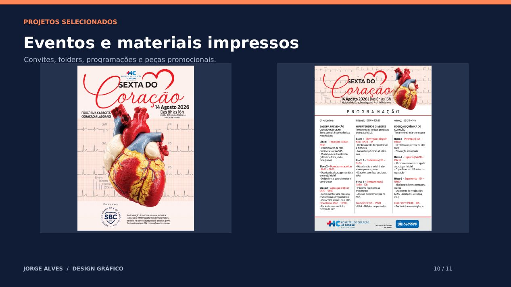

← VOLTAR AO PORTFÓLIOImpressos
Eventos e impressos
Convites, folders, programações e materiais de divulgação de eventos. A composição visual é adaptada à finalidade da comunicação, considerando legibilidade, formato, identidade e público.

Prévia do trabalho selecionado, retirada do portfólio.